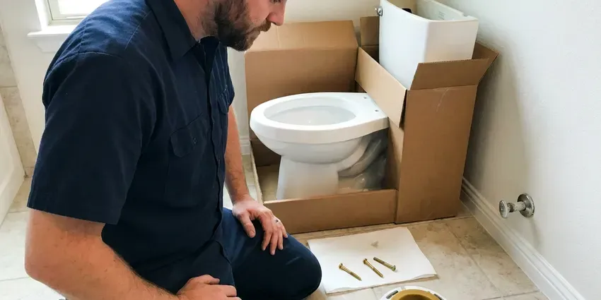

Faucet Replacement in Mesa, AZ
Out with the corroded, crusty faucet and in with a fresh one. Our plumbers handle faucet replacement throughout Mesa, AZ in about an hour.
- Same-Day Faucet Replacement
- Old Faucet Removal Included
- New Shutoffs and Supplies
- Licensed, Insured Plumbers
A New Faucet and No More Drips in Mesa, AZ.
Call now for a flat price that covers removal, installation and new supply lines.
Faucet Replacement for Kitchen and Bathroom Sinks in Mesa, AZ
CVR Plumbing replaces old, corroded and leaking faucets with new models that work smoothly and resist hard water wear. We remove the old faucet, clean the sink deck of mineral buildup and install the new faucet with fresh supply lines. The old faucet leaves with us.
Our expertise includes:
- Removal of seized and corroded faucets without sink damage
- Angle stop and supply line replacement during each swap
- Matching new faucets to existing sink hole layouts

Additional Bathroom Plumbing Services in Mesa, AZ
From toilets to showers, our bathroom plumbing team in Mesa, AZ repairs, installs, and replaces every fixture with clean, code-compliant work.



Local toilet installation by CVR Plumbing, Mesa


Customers
Why Choose CVR Plumbing for Faucet Replacement in Mesa, AZ?
Old faucets often fight back, with nuts fused by years of mineral scale. We have the basin wrenches and cutting tools to remove them cleanly and protect your sink.
- Clean Removal, We remove seized faucets without cracking porcelain or scratching stone.
- Full Upgrade, New shutoffs and supply lines come standard when needed.
- Quality Fixtures, We recommend faucets with ceramic cartridges that hold up to hard water.
Citywide Coverage
We replace faucets in every part of Mesa, from historic homes to new subdivisions. Scheduling is quick, and same-day service is often available.
Experienced Team
Our team has replaced faucets of every type, from old two-handle compression faucets to modern pull-down kitchen models. They know how to deal with rusted mounting nuts and tight spaces.
Safety-First Approach
We shut off water and protect your cabinets and countertops before removing the old faucet. Any water damage under the sink is pointed out so you can address it.
Trusted Certified Mesa Plumbing Services Professionals
At CVR Plumbing, we take pride in providing licensed, certified plumbing services throughout Mesa, AZ. Backed by recognized industry credentials, our experienced plumbers combine technical skill with genuine customer care. Whether it is repair, installation, or maintenance, we follow strict safety and quality standards to deliver long-lasting results you can trust.
Call Us Now PHCC Plumbing Contractor Recognition
PHCC Plumbing Contractor Recognition Better Business Bureau (BBB) Accreditation
Better Business Bureau (BBB) Accreditation Angi Certified Pro
Angi Certified Pro ISO 9001 Quality Management Certification
ISO 9001 Quality Management CertificationReliable Faucet Replacement Services in Mesa, AZ
Kitchen Faucet Replacement in Mesa
Kitchen faucets wear out from heavy use, and pull-down hoses and spray heads often fail first. We remove the old faucet, clean the deck and install a new single-handle, pull-down or commercial-style faucet. New supply lines and shutoffs are added when needed. We test spray modes and check for leaks before we leave.

Bathroom Faucet Replacement in Mesa, AZ
Bathroom faucets often become crusty and drippy over time from hard water. We replace centerset, widespread and single-hole bathroom faucets and install new pop-up drains to match. If you are replacing a vanity faucet as part of a quick refresh, we work cleanly and quickly. The result is a faucet that works smoothly and looks great.
Corroded Faucet Replacement in Mesa
Mineral scale and corrosion can make faucets stiff, leaky and hard to clean. When the faucet body or base is corroded, cartridge repairs will not last. We remove the old faucet, even when nuts are seized, and install a new one with ceramic disc cartridges. Ceramic cartridges hold up better to hard water than older rubber washer designs.
Tub and Shower Faucet Trim Replacement in Mesa, AZ
If your tub or shower handles and spout look worn, a trim kit replacement can refresh them without opening the wall. We match the trim to your existing valve brand, such as Moen Posi-Temp or Delta Monitor. If the valve itself is outdated, we can discuss a valve upgrade. Trim swaps are quick and affordable.
Touchless Faucet Upgrade in Mesa
Replacing a standard faucet with a touchless model adds convenience and hygiene, especially in busy kitchens. We install the faucet, mount the control box and connect battery or plug-in power. Sensor range and flow are tested and adjusted. This is one of the most popular kitchen upgrades we install.
Outdoor Faucet Replacement in Mesa, AZ
Outdoor hose bibs can crack from sun exposure or, in cooler parts of the state, from freezing winter nights. We replace worn spigots with frost-free hose bibs and add vacuum breakers for backflow protection. New hose bibs stop leaks at the handle and spout. We also check for leaks inside the wall behind the bib.
Commercial Faucet Replacement in Mesa
Commercial kitchens and restrooms put heavy demand on faucets. We replace pre-rinse units, hand sink faucets and sensor faucets with durable commercial-grade models from T&S, Chicago Faucets and Sloan. Work is scheduled to minimize disruption to your business. All installations meet health and accessibility codes.

Faucet Replacement Cost Comparison in Mesa, AZ
A quality new faucet often costs $150 to $400 for the fixture, and installation adds about $150 to $300. Repeated cartridge repairs can add up quickly, especially on older faucets with hard-to-find parts. We give you repair and replacement prices side by side. Many homeowners find replacement is the better long-term value.
Faucet Replacement Near Me in Mesa, AZ
Searching for faucet replacement near me usually means you want it fixed fast. CVR Plumbing offers same-day faucet replacement in many cases. We bring the tools to remove even stubborn old faucets.
Our plumbers are local to Mesa and know the fixtures common in area homes. We work cleanly, explain your options and give a flat price up front. Every replacement is backed by our workmanship guarantee.
CVR Plumbing at a Glance
- Fully licensed plumbing team covering Mesa, AZ
- Same-day appointments and 24/7 emergency response
- Upfront, flat-rate pricing before work begins
- 4.8-star rated by 713+ Arizona customers
Mesa Map
Mesa Information
- Population
- 511,648
- Area codes
- 480/602/623
- Service area
- Mesa and communities within 40 miles
- Nearby
- Gilbert, Chandler, Tempe, Queen Creek
Mineral-heavy Arizona water corrodes and stiffens faucets over time, so faucet replacement in Mesa, AZ with ceramic cartridge models restores smooth, leak-free flow.
Expert Services
Trust our professionals for reliable CVR Plumbing solutions in Mesa, AZ.
Our Specialized Plumbing Services in Mesa, AZ
At CVR Plumbing, we provide a complete range of plumbing services across Mesa, AZ. From leak detection to full system installations, our team ensures fast, precise, and affordable service for both residential and commercial properties. Explore our core services below:


How Our Faucet Replacement Process Works in Mesa, AZ
Faucet replacement with us is fast and easy. Here is what to expect.
Request a Quote
Call (928) 470-9009 and tell us about the faucet you want to replace. We give you a flat price for removal and installation.
Remove the Old Faucet
We shut off water and remove the old faucet, even if it is seized. We clean the sink deck and inspect shutoff valves.
Install and Test
We install the new faucet with fresh supply lines and test for leaks and proper flow. Then we clean up and take the old faucet away.
Frequently Asked Questions About Faucet Replacement in Mesa
Faucet replacement labor usually runs $150 to $350. Including a quality mid-range faucet, most jobs total $300 to $750. Touchless or high-end faucets can bring the total to $800 or more.
New faucets typically carry manufacturer warranties, often lifetime on cartridges for major brands. We also guarantee our installation workmanship.
Most faucet replacements take about 1 to 1.5 hours. Seized faucets or shutoff valve replacements can add time.
In many cases, yes. We carry popular faucet models on our trucks, and we can install a faucet you have already purchased.
Faucets with ceramic disc cartridges from Moen, Delta, Kohler and Grohe tend to hold up well. Keeping aerators clean and using a water softener also help.
Replace a faucet if it leaks after repairs, the body is corroded or cracked, parts are discontinued or it simply no longer suits your kitchen or bath.
We check your sink's hole count and spacing and recommend compatible faucets. Many single-hole faucets include a deck plate for three-hole sinks.
Yes. Removal and disposal are included in our faucet replacement service.
What People Are Saying About Our Plumbing Experts?

Mark T.
When our office needed drain cleaning, CVR Plumbing provided quick, reliable service. The plumber arrived on time and made sure every drain flowed perfectly before leaving. Very satisfied.
Drain Cleaning · Scottsdale, AZ
James P.
Our commercial plumbing system had a leak under the sink, and CVR Plumbing handled it professionally. The plumbers arrived quickly and restored everything without disruption to our customers.
Commercial Plumbing · Mesa, AZRobert G.
The trenchless sewer replacement saved our front yard. They walked us through the camera inspection footage first so we knew exactly what we were paying for.
Sewer Line Replacement · Gilbert, AZ
Daniel K.
A pipe burst at 11 pm and they actually answered. The plumber showed up within the hour, shut everything down, and had us back to normal the next morning. Could not ask for more.
Emergency Plumbing · San Tan Valley, AZ
Emily R.
I called CVR Plumbing for plumbing repair, and the technician was fast, polite, and thorough. They explained the problem clearly and fixed it the same day. I will definitely hire them again. Highly recommended!
Plumbing Repair · Scottsdale, AZ
Patricia H.
We had a slab leak that two other companies could not find. CVR Plumbing located it in under an hour, explained our options, and the price matched the quote to the dollar.
Slab Leak Repair · Chandler, AZ